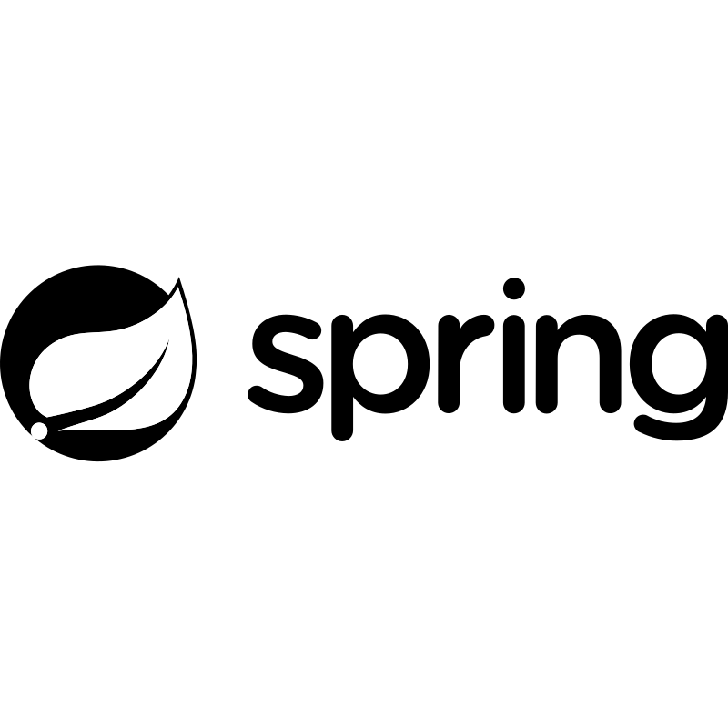
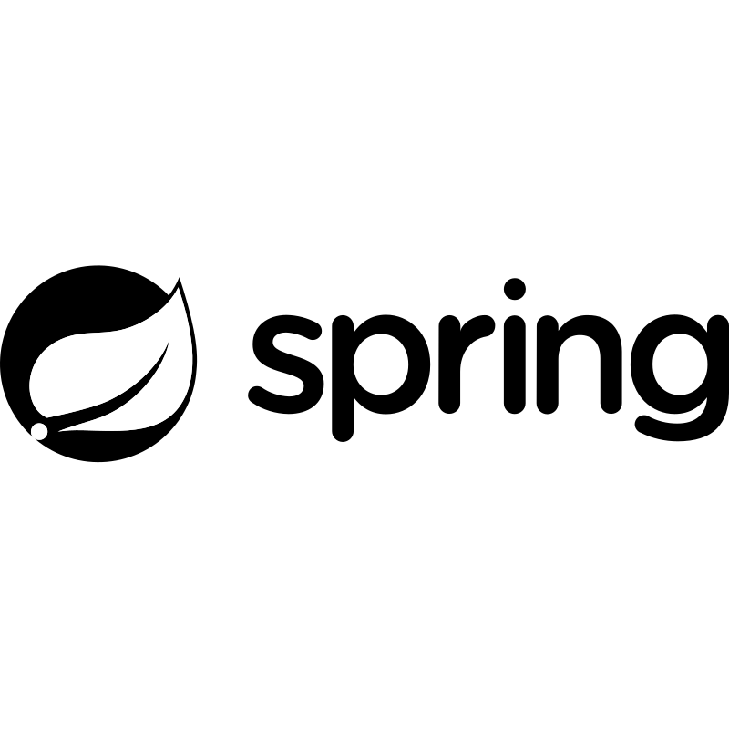

招
( shō )
Me esfuerzo por aplicar cada día una práctica profesional basada en el estudio constante, la responsabilidad técnica y la atención precisa al detalle. Desarrollo, diseño y seguridad son áreas que integro de forma ordenada para ofrecer soluciones prácticas y bien ejecutadas. La disciplina no es un mérito añadido, sino la base que guía mi trabajo diario.
</Desarrollo Web> — { Sitios eficientes con estructura, interfaces amigables e integracion de bases de datos }
</Ciberseguridad> — { Auditoría técnica, buenas prácticas de protección, capacitación y documentación. }
</Diseño Gráfico> — { Identidad visual profesional, diseño de experiencia de usuario (UX/UI) presisas y funcionales. }
</Ingenieria de Software> — { Automatización de tareas, diseño de arquitecturas de Software, herramientas industriales, comerciales y educativas. }
</Soporte Técnico | Hardware> — { Reparación de PC, infraestructura de redes, mantenimiento y asistencia presencial & remota. }
{ ESP Español — Nativo | ENG Inglés — Avanzado | BR Portugués — Intermedio | DE Alemán — Básico }


 
